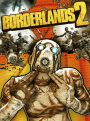

|  | |
| Tiempo de juego | No Jugado |
| Última actividad | Nunca |
| Añadido | 11/6/2024 14:41:31 |
| Modificado | 11/8/2024 17:35:12 |
| Estado de finalización | No Jugado |
| Librería | Playnite |
| Fuente | 6TB STORE |
| Plataforma | Android Macintosh Microsoft Xbox 360 Microsoft Xbox One Nintendo Switch PC (Linux) PC (Windows) Sony PlayStation 3 Sony PlayStation 4 Sony PlayStation Vita |
| Fecha de lanzamiento | 9/18/2012 |
| Puntuación de la Comunidad | |
| Puntuación de la Crítica | 81 |
| Puntuación de usuario | |
| Género | Action role-playing First-person shooter |
| Desarrollador | Gearbox Software |
| Editor | 2K |
| Característica | Multiplayer Single-player |
| Enlaces | Wikipedia Official website |
| Tag | [Game Engine] Unreal Engine 3 [People] artist: Jeramy Cooke [People] composer: Cris Velasco [People] composer: Jesper Kyd [People] composer: Sascha Dikiciyan [People] designer: John Hemingway [People] director: Paul Hellquist [People] producer: Matt Charles [People] producer: Sean Reardon [People] programmer: Steven Jones [People] writer: Anthony Burch |
Borderlands 2 is a 2012 action role-playing first-person shooter video game developed by Gearbox Software and published by 2K. Taking place five years following the events of Borderlands (2009), the game is again set on the planet of Pandora. The story follows a new group of Vault Hunters who must ally with the Crimson Raiders, a resistance group made up of civilian survivors and guerrilla fighters, to defeat the tyrannical Handsome Jack before he can unlock the power of a new Vault. The game features the ability to explore the in-game world and complete main missions and optional side quests, either in offline splitscreen, single-player or online cooperative gameplay. Like its predecessor, the game features a procedurally generated loot system which is capable of generating numerous combinations of weapons and other gear.
With the unexpected success of the first game, Gearbox was able to secure a budget of $30–35 million to develop the sequel. Like its predecessor, the game adopted the "concept art style", which features graphics inspired by both photorealistic imagery and comic-book-inspired visuals. The team attempted to address players' feedback from the first game, and recruited Anthony Burch who wrote the game's script which is seven times longer than that of the original game. Among the game's diverse cast of characters, Handsome Jack, the central antagonist, was created to be a charismatic "douche" that mirrors Burch's own personality.
Borderlands 2 was released for Microsoft Windows, PlayStation 3 and Xbox 360 in September 2012, and an updated port was released for Windows, PlayStation 4 and Xbox One as part of Borderlands: The Handsome Collection in March 2015. A virtual reality version titled Borderlands 2 VR was released for PlayStation VR in December 2018 and Windows in October 2020.
The game received universal acclaim upon release. Critics generally praised the game's visuals, writing, gameplay, and online multiplayer, as well as its variety of guns, while criticizing its mission design and content fillers. The handheld and the virtual reality versions of the game were regarded to be inferior to the console and PC versions. More than 20 million units were shipped upon release and the game became 2K's most successful release. It was nominated for multiple year-end awards by several gaming publications. Gearbox supported the game with four add-on campaigns, new characters and five content packs. The game was followed by Borderlands: The Pre-Sequel in October 2014, and Borderlands 3 in September 2019. Since its release, it has been cited as one of the greatest video games ever made.
Similar to its predecessor, Borderlands 2 is a first-person shooter with elements drawn from role-playing video games. Four playable character classes are available in the base game, each with their own unique Action Skill: Axton, "the Commando", can summon a turret to provide offensive support. Maya, "the Siren", can "phaselock" enemies by trapping them in a sphere of energy for a few seconds. Zer0, "the Assassin", can temporarily become invisible and spawn a hologram decoy to distract enemies. Salvador, "the Gunzerker", can use his titular ability to temporarily dual-wield weapons. Action Skills have a cooldown time during which the player must wait before they can use the skill again. Similarly to the original, completing the main story campaign unlocks "True Vault Hunter Mode", a New Game Plus which increases the difficulty of the game by making enemies stronger, improves the probability of finding rare and higher-quality items, and allows the player's character to reach level 50.
Weapons can be bought from vendors, picked up from fallen enemies, and found inside containers. The game features six weapon types—pistols, submachine guns, assault rifles, shotguns, sniper rifles, and rocket launchers—with a procedurally generated loot system capable of generating numerous variations of these and other gear. The in-game manufacturers of the weapons provide them with distinct characteristics. Each weapon also has different stats and properties, such as producing different damage and having varying accuracy, fire rate, reload speed, and magazine size. A color-coded scale is used to indicate the rarity of the weapon or item. Some weapons are infused with additional elemental effects that deal extra damage to enemies. In addition, players can collect mods which would alter the stats of grenades and Action Skill, and Relics, which are rare items that can change any gameplay aspect. Players need to manage their inventory regularly as they cannot equip all the weapons they have collected.
The player is protected by a shield, which can automatically regenerate from damage. If the shield is destroyed, the player's health would start to deplete. Insta-Health vials can be picked up to restore health. If they lose all their health, they enter a downed state and must either wait to be revived by another player or attempt to kill an enemy to achieve a "second wind". Otherwise, they will be regenerated back at the last "New-U" station that they passed. As the player completes missions and kills enemies, they gain corresponding rewards such as experience points (XP) and new weapons. Once they gain enough XPs, they level up, which unlocks new skill points to upgrade abilities. Each Vault Hunter can progress in three different skill trees after unlocking the basic class-specific Action Skill. In addition, levelling up increases the maximum health capacity and unlocks new weapons, some of which cannot be used until the player reaches a certain level.
As the player explores and completes missions, new areas of the game world are unlocked. The game has a semi open world structure, as the world is divided into several sections which can be freely explored. In each area, different non-playable characters are encountered who provide side missions for the players. Players can spawn vehicles in order to quickly traverse some areas. The in-game currency can be collected from loot drops, loot containers, completing missions, and selling unwanted equipment, and can be used to purchase items from vending machines. Players can also gather Eridium bars, a new currency for purchasing storage upgrades and other premium items. A major addition to the game is the "Badass Rank" system; completing various in-game challenges award points, which convert into tokens that can be redeemed to increase the base stats of the player's characters. When exploring the world, players can access certain New-U stations in order to fast travel, and Quick-Change machines allow players to customize their avatar's look, clothing and name.
The game supports four-player cooperative multiplayer, though the PlayStation Vita version only supports two players. As more players join a session, the game's difficulty increases along with the loot rewards. Players can trade items and cash, or can duel for the agreed-upon stakes. The game also features split-screen multiplayer.
Five years have passed since the events of Borderlands, when four Vault Hunters—Roland, Mordecai, Lilith, and Brick—were guided by a mysterious entity known as "The Guardian Angel" to the Vault, an ancient alien structure that was rumored to hold exotic technology and riches. On entering the Vault, they were instead confronted by an alien abomination known as "The Destroyer". After defeating The Destroyer, a valuable mineral called "Eridium" started flourishing through Pandora's crust. Handsome Jack (voiced by Dameon Clarke), president of the Hyperion Corporation, secures this new resource and makes use of it to attempt to "bring peace" to the planet. Now, Handsome Jack rules over the inhabitants of Pandora with an iron fist from his massive space station, Helios. Meanwhile, rumors spread of an even larger Vault, drawing a new group of Vault Hunters who search for it.
Like its predecessor, Borderlands 2 features four playable characters: Axton the Commando (Robert McCollum), Maya the Siren (Martha Harms), Salvador the Gunzerker (John Swasey), and Zer0 the Assassin (Michael Turner). Two additional characters are available as downloadable content (DLC): Gaige the Mechromancer (Cherami Leigh) and Krieg the Psycho (Jason Douglas). The four player characters from the first game, Roland (Markus Lloyd), Lilith (Colleen Clinkenbeard), Brick (Marcus Mauldin), and Mordecai (Ernesto Jason Liebrecht), return in the form of non-player characters (NPCs). Other NPCs originating from the first game and its DLCs include the Guardian Angel (Jennifer Green), Claptrap (David Eddings), Scooter the mechanic (Michael Neumann), Dr. Zed (Ric Spiegel), Marcus the arms merchant (Bruce DuBose), Mad Moxxi (Brina Palencia), Crazy Earl (Randy Pitchford), and the insane archaeologist Patricia Tannis (Clinkenbeard); new NPCs include the cyborg hunter Sir Hammerlock (J. Michael Tatum), Scooter's sister Ellie (Jamie Marchi), and explosives-obsessed girl Tiny Tina (Ashly Burch).
The game opens with the Vault Hunters aboard a Hyperion train on Pandora. Their employer, Handsome Jack, suddenly sabotages the train and leaves the Vault Hunters for dead in a frozen wasteland. The Vault Hunters are found by the last remaining CL4P-TP ("Claptrap") unit. The Guardian Angel contacts the Vault Hunters and instructs them to accompany Claptrap to the city of Sanctuary, and to join the Crimson Raiders, an anti-Hyperion resistance movement, in order to defeat Handsome Jack.
Upon arriving at Sanctuary, the Vault Hunters are asked to rescue Roland, leader of the Crimson Raiders, who has been captured by a bounty hunter called the Firehawk. The Vault Hunters meet the Firehawk, who turns out to be Lilith, whose Siren powers have been enhanced by the new supply of Eridium. Lilith informs the Vault Hunters that Roland was actually captured by a group of bandits. After fighting through the bandits' territory, the Vault Hunters rescue Roland and return to Sanctuary.
Roland and Lilith learn that the Vault Key stolen from Tannis is being transported aboard a Hyperion train, and ask the Vault Hunters to retrieve it. The Vault Hunters derail the train, but instead of finding the Vault Key they encounter Wilhelm, a Hyperion cyborg and one of Handsome Jack's enforcers. The Vault Hunters kill Wilhelm and recover his power core, which Roland recommends be used as the power source for Sanctuary's shields. The power core turns out to be a trap; it allows the Guardian Angel, who is revealed to be working for Jack, to lower the city's shields, leaving it vulnerable to an orbital bombardment. Lilith saves Sanctuary, which was originally a large spacecraft, by activating its engines and teleporting it away.
Handsome Jack's plan is to open Pandora's second Vault and unleash the "Warrior", a powerful Eridian monster controlled by whoever releases it; as the Vault Key only charges itself every 200 years, he is using Eridium to forcefully charge it. Angel communicates with the group in Sanctuary, and divulges that the Vault Key is kept with her in a heavily guarded Hyperion facility. The Vault Hunters prepare an attack on the facility, enlisting former Vault Hunters Brick and Mordecai. Roland and the Vault Hunters assault the Hyperion compound and meet Angel, who is a Siren and Jack's daughter. She reveals Jack is using her to charge the Vault Key, and requests to be killed in order to stop her father. Against Jack's efforts to defend her, Roland, Lilith, and the Vault Hunters destroy Angel's life support, killing her. An enraged Jack kills Roland and captures Lilith, forcing her to obey him, as he had done to Angel. Before Jack can make Lilith kill the Vault Hunters, she teleports them back to Sanctuary. Jack then uses her to continue charging the Vault Key in Angel's place.
While Mordecai and Brick prepare an attack on the Vault, the Vault Hunters travel to the Hyperion Information Annex and obtain the Vault's location. After mounting an attack, the Vault Hunters find and defeat Jack, but fail to prevent him from opening the Vault and unleashing the Warrior. The Vault Hunters manage to kill it, and, depending on player choice, either execute Jack or let Lilith do it. As Lilith then attempts to destroy the Vault Key, she accidentally activates an information bank which contains a map of the galaxy, indicating the locations of several Vaults. Lilith remarks that "there ain't no rest for the wicked" before the screen cuts to black. During the credits, various scenes are shown of the Pandorans celebrating Handsome Jack's defeat and taking back their planet from the remaining Hyperion forces.
Following the release of the first Borderlands, developer Gearbox Software was simultaneously working on three distinct projects: finishing Duke Nukem Forever, creating Aliens: Colonial Marines, and working on a sequel to the original Borderlands. The initial goal was to create a sequel similar in scale to the first game, but Borderlands' unexpected success enabled the team to expand their budget during the development of Borderlands 2, allowing them to expand their scope and create more content. The development budget ultimately grew to $30–$35 million. Paul Hellquist served as the game's creative director, Jeramy Cooke as its art director, and Anthony Burch as its writer. Sascha Dikiciyan, Cris Velasco, and Jesper Kyd worked together to craft the game's original soundtracks, while Gearbox's Raison Varner provided additional music. The game's development was completed on August 20, 2012, with Gearbox confirming that it was being prepared for duplication and release.
Similar to the first game, Borderlands 2 adopted the "concept art style", which features graphics inspired by both photorealistic imagery and comic-book-inspired visuals. This was difficult to replicate, because the first game was "artfully unfinished"—its artstyle had been switched at the last stage of development with some older visual designs present in the final product. To recreate the sense of "imperfection" and allow for innovation, the art team were given creative freedom while management avoided frequent requests for design revisions. Cooke was responsible for creating a loose "style guide" for the game, and the team accepted work which deviated from these standards. Team members were also encouraged to submit creations that "break boundaries". The design for Zer0, a faceless assassin, faced scrutiny from upper management for deviating too much from what was expected from Borderlands, but Cooke refused to have the character redesigned as he felt that his design would be something new for the franchise. To add more color to the game, a diverse set of environments were modeled, from glaciers to grasslands, as opposed to the first game which is set entirely in a desert. With a more colorful world, the team believed that it would encourage players to explore each area. Through having more vibrant colors and creating various landmarks, the team also thought that it helped to make each area distinct.
One of the early objectives for Hellquist was to improve the original game's shortcomings while creating an experience that felt new. A September 2011 survey asked players what they wanted in the new game, and DLCs for the first game were used to experiment and test what players might enjoy in the sequel. One of the early goals was to create a new set of characters, as the team felt that the original cast was too "limiting". The team also made various quality-of-life improvements, such as improving the user interface to make navigating the game's menus easier. Menu layout was refined and the team introduced additional environmental clues to better inform players how different areas are connected. Effort was also placed on making each area more "dense" and "alive". They also wanted to improve the game's cooperative multiplayer, from incorporating private trading of weapons between players to introducing a four-passenger vehicle so that a cooperative team could stick together. A "shared loot" system was incorporated in order to facilitate a collaborative relationship between players.
Gearbox also wanted to make unique weapons. The first game utilizes procedural generation to generate different guns but the differences were not always distinguishable. To solve this problem, the team ensured that each gun manufacturer would have its own distinct gameplay and visual characteristics. To achieve this, each weapon manufacturer has a "trademark style" that would appeal to different players. For instance, the Maliwan brand features weapons inspired by sci-fi technology, while the Dahl brand was for players who preferred weapons that were more grounded in reality. The differences in the weapon manufacturers mean that players can easily identify the weapons they want to use. The Bandit brand was inspired by Mad Max and Death Race and featured a "very home-built look". The Torgue brand was influenced by engine blocks and aircraft designs from the 1940s and the 1950s. In contrast, Tediore was the "throwaway brand", and the team took inspirations from disposable razors and lighters, and "cheap Go phone".
As many players complained about the forgettable story for the first game, Burch strived to make the narrative compelling and unique by subverting players' expectations and including a plotline so ridiculous that it cannot be found in any other triple-A games. Despite the script being seven times longer than the original's, the story was not too overbearing on players as the team believed that the essence of the game was about "finding progressively more ridiculous guns to blow up psychotic midgets" instead of the story. To achieve this, the team minimised the use of cutscenes and focused on environmental storytelling. While the game features a humorous tone, the story retains dark moments to keep players invested. One of the darker moments was Angel's death, which went through multiple revisions as the team tried to refine the tone. Roland's death in the later part of the game was also a deliberate decision as it makes the story more relevant and impactful.
According to Hellquist, a diverse cast of characters played a huge role in defining Borderlands' identity. The story is delivered via interactions between these characters rather than text, unlike the first game. Burch's script introduced a large number of new characters, with Burch singling out Tiny Tina and Ellie as the best additions. The team crafted three to five side missions for these characters so that players could better understand their backstories and personalities. Returning characters, especially the playable Vault Hunters from the first game, became major characters in the game's main narrative, so that players get to learn more about them and see how they interact with each other. Series mainstay Claptrap returned in Borderlands 2. He was initially envisioned to be "arrogant, insulting, profane", similar to his depiction in its web series. However, he was later rewritten so that "fans who hadn't seen the shorts wouldn't be shocked at Claptrap's sudden doucheitude in BL2". Burch, in hindsight, stated that one of his biggest regrets was the inclusion of silenced protagonists, since they felt "out-of-place" in a game that features a large cast of eccentric characters and an over-the-top world. However, when playtesters complained about this, it was already too late for Burch to introduce dialogue for the playable characters because mission scripting had already been finished. To remedy the problem, he added character-specific audio logs to the game, allowing the Vault Hunters to narrate their backstory to the players. Burch initially wrote banter dialogue between the Vault Hunters which would be triggered when the player left their controllers idle for a while, though this idea was scrapped.
To create players' agency and motivation, the team attempted to incorporate a concrete goal and a central villain into the story. Handsome Jack served the purpose and helped remind players that he is a constant threat, "the point of the game" and that one of the ultimate goals is to kill him. Jack was envisioned to be a charismatic "douche", mirroring Burch's own personality. He was a funny, likable antagonist who is "hard to outright hate but nonetheless deserves everything he has coming to him". Burch was inspired by classic villains including GLaDOS from Portal and SHODAN from System Shock, and stated that he would have been the protagonist if the story was told from a different perspective. While Jack has a dismissive attitude in the early section, he becomes more aggressive after the death of his daughter Angel. This was to create a revenge arc to make him more memorable. The game is set five years after the first game, in order to show how Jack, who rose to power following the events of the first game, influenced Pandora during this period.
Following the unexpected success of the first Borderlands, creative director Mikey Neumann stated that there was a chance of a follow-up being created. In August 2011, the game was confirmed and titled Borderlands 2. The game was released on September 18, 2012, in North America and on September 21, 2012, internationally. Players who pre-ordered the game gained access to the "Premier Club", which granted the players additional in-game items, weapons and access to the fifth character. Publisher 2K Games and Gearbox Software marketed the game heavily prior to its official release. They released a 16-bit demake of the original game on web browser in August 2012. Another browser-based spin-off game, named Mount Jackmore, was released for European players in September 2012. Players who completed the spin-off, which involves shooting at a mountain carved with Handsome Jack's face, would have a chance to win prizes such as pin badges, figurines and copies of the game. Gearbox also launched a scheme for players of the original game, who could unlock exclusive cosmetic items when they purchased Borderlands 2. Gearbox revealed that they would be honoring a late fan of the game, cancer victim Michael John Mamaril, with the addition of an NPC named after him.
The game was ported to various platforms. Aspyr Media published the game on November 20, 2012, for OS X systems. Gearbox partnered with Iron Galaxy Studios to release a PlayStation Vita version in May 2014. Vita's cross-save allows PlayStation 3 players to transfer their progress to the Vita. On January 20, 2015, Gearbox announced that it would release Borderlands: The Handsome Collection—a port of Borderlands 2 and Borderlands: The Pre-Sequel! for PlayStation 4 and Xbox One, on March 24, 2015. Both games in The Handsome Collection feature remastered graphics, and are capable of running at 1080p resolution at 60 frames per second when playing with one or two local players. The games are also capable of local split-screen multiplayer with up to four players. On March 26, 2020, Gearbox announced that it would release The Handsome Collection, plus the original Borderlands, for Nintendo Switch as Borderlands Legendary Collection on May 29, 2020. The team, however, did not port Borderlands 2 to the Wii U because the team "couldn't come up with an 'OMG' feature that makes use of the Wii U's uniqueness".
On August 20, 2012, it was announced that a four-issue Borderlands comic would be released in November 2012 to tie in with Borderlands 2. The miniseries was written by Mikey Neumann and published by IDW. It tells the story of how the original four Vault Hunters came to be together at the beginning of Borderlands, filling in their backstory and setting up the events of both games. Claptrap appears as an opponent in the crossover title Poker Night 2, with players able to unlock new Borderlands 2 content upon the completion of certain objectives. A new season of the web series, also featuring Claptrap, was released in November 2012. In 2013, 2K partnered with merchandise maker National Entertainment Collectibles Association to create real-life masks based on Handsome Jack and Psycho Bandit.
Gearbox hoped to continue engagement with the community following the game's release. It introduced the SHiFT rewards program. Codes are released on various social media sites and forums that can be redeemed in the Borderlands 2 main menu for Golden Keys, which can be used to open the special Golden Chest that is located in the travel station in Sanctuary. When opened, the chest randomly produces rare equipment of the redeeming player's level. SHiFT codes can also be used to redeem special skins. A loot-hunt community event was launched in October 2013, in which players completed daily community goals to unlock special guns for a chance to win a $50,000 grand prize. Gearbox also released two companion apps. The Official Map App displays the map layout and reveals the locations of various hidden chests, while the LootTheWorld app gives players a QR code which can be scanned to unlock in-game loot.
A "Deluxe Hunter's Collector's Edition" was released and includes an artbook, stickers, map of Pandora, digital comic download code, a Marcus Kincaid bobblehead plus in-game DLC.
In addition, the "Ultimate Loot Chest Limited Edition" was also available. It contains all of the Deluxe Hunter items plus a collectible scale replica of the red loot chests found within Borderlands 2. A steel case, Creatures of Pandora ID chart, postcard set, field notes from Sir Hammerlock and a cloth map are also included. Each comes individually numbered.
A "Game of the Year Edition" was released in October 2013. It contains all the content from the season pass, two additional playable characters — Mechromancer and Psycho — and other downloadable extras.
On January 11, 2014, 2K partnered with Bethesda Softworks to bundle Borderlands 2 with Dishonored on Xbox 360 and PlayStation 3 with the bundle arriving on February 11, 2014.
Gearbox supported the game with downloadable content (DLC). The fifth character, Gaige the Mechromancer, was available for purchase on October 16, 2012. The character was designed for people who are unfamiliar with the shooter genre. On March 23, 2013, Gearbox announced two new downloadable content packs. The first pack, Ultimate Vault Hunter Upgrade Pack, raised the level cap from 50 to 61 and added new playthrough called the Ultimate Vault Hunter Mode. The second pack, the Psycho Pack, contains a sixth playable character — a Psycho named Krieg. Psychos are psychotic bandit enemies fought during the main campaign. He is a primarily melee focused character with an action skill called "Buzz Axe Rampage", which boosts his melee damage and causes him to regain health whenever he kills an enemy. It was released on May 14, 2013, and is not included in the Season Pass. Ultimate Vault Hunter Upgrade Pack 2: Digistruct Peak Challenge was released on September 3, 2013. The DLC increases the level cap from 61 to 72 and introduces the Digistruct Peak Challenge, a new map where Patricia Tannis will let players fight high-level enemies to earn new loot. The game's "Game of the Year Edition" and the season pass also bundle the base game with 4 add-on campaigns, which include the following:
Following the release of the four add-on campaigns, Gearbox announced plans to release the Headhunter series of DLCs. These packs generally cost less than the add-on campaigns and feature less content. Gearbox originally intended to make three Headhunter packs but ultimately created five.
The game's last DLC, Commander Lilith and the Fight for Sanctuary was announced and released on June 9, 2019. The DLC was released for PC, and for The Handsome Collection version of the game on Xbox One, PlayStation 4 and Nintendo Switch. It was available as a free download for the first month after release. The story of the DLC picks up after the events of Borderlands 2 and acts as a bridge to the story of Borderlands 3, setting up the transition to the new Sanctuary 3 base ship and bringing characters from 2014's Tales from the Borderlands into the bigger story. In the DLC, after Helios station has crashed on the surface of Pandora, Lilith and the other Vault Hunters struggle with what they have learned from the Vault map, of potentially many more Vaults on other planets. As they try to figure out some way to make a space-worthy ship, Sanctuary is attacked by Dahl's Colonel Hector, who has created a powerful mutant army using a strange floral spore. The group abandons Sanctuary and takes shelter at a former bandit camp, now empty except for its leader, Vaughn, as Hector mutated his followers. The Vault Hunters work with Vaughn and other allies to take back Sanctuary and the Vault map from Hector.
A virtual reality version titled Borderlands 2 VR was released for the PlayStation VR on December 14, 2018. This version does not have any multiplayer, but instead features the "BAMF" (Bad Ass Mega Fun) system which allows players to temporarily slow game time in order to plan their attack, and new voice lines from the current voice of Claptrap, Jim Foronda. The Windows version of the VR port was released on October 24, 2020.
The game received generally positive reviews upon release, according to review aggregator Metacritic. Many reviewers agreed that the game is a notable improvement over the original.
Allistair Pinsof, writing for Destructoid, praised the gunplay and the variety of guns, which can change the gameplay experience as different weapons force players to approach combat differently. However, he was disappointed by the conservative mission design, especially for a game that features over-the-top characters. Christian Donlan from Eurogamer liked how distinct the gun manufacturers are, and felt that they have successfully modified the pace of play. He also lauded the extensive customisation options, and the enemy variety. PC Gamer's Tom Francis agreed, adding that the enemy designs keep the combat interesting and engaging. Chris Watters from GameSpot praised the gunplay, describing it as "solid" and "satisfying", though he was disappointed that combat seemed largely similar across the four classes. He also praised the world of Pandora for being a "vibrant, living place", as opposed to Borderlands' desolate desert. Both Donland and Dan Ryckert from Game Informer appreciated the quality-of-life adjustments Gearbox implemented, with Ryckert saying that they made the game a "noticeably superior experience" when compared with the first game. Mike Minotti from VentureBeat described Borderlands 2 as an excellent blend of FPS and RPG, and praised Gearbox for perfecting the looter-shooter genre. However, he criticised the game for reusing dungeons and the presence of some overpowered enemies. The game's driving component was considered to be a missed opportunity. Bob Mackey of 1Up.com appreciated the improvements to the sequel but felt Gearbox could have done more, stating: "Sure, the changes here are enough to merit a "2," but I don't see the basic experience being elevated in any way outside of some minor improvements."
Pinsof praised the game's story and writing, calling it "the funniest, cleverest script to grace a game since Portal 2". He applauded Gearbox for expanding the lore and the characters, and added that every character has their own "golden line of comedic dialogue". He also liked how the humor in the game elevated the main campaign and the side missions. Ryckert also liked the humorous goals of the side missions, and stated that they have a lot of "entertainment value". He added that the sense of humor displayed in the game was one of the best in the industry. Anthony Gallegos from IGN called the story "predictable", but still regarded it as an improvement over the original. However, he enjoyed completing the side-quests due to their presentation, writing and action, despite their conventional design. Minotti, however, felt that the game's heavy focus on humor undermined the game's more serious moments. Minotti praised the colorful cast of characters, singling out the humorous writing for Claptrap, Tiny Tina, and Ellie. Handsome Jack also received a lot of praise. Ryckert called him "entertaining", while Pinsof added that he was "lovable". Sterling McGarvey, writing for GamesRadar, noted that the campaign is bloated with filler content, but the narrative remains compelling due to the presence of Jack as a strong central villain. Polygon's Arthur Gies also added that the game had "MMORPG quest design of the worst kind", and felt that Gearbox intentionally lengthened the game by adding unnecessary fillers and content. Both Francis and Arthur Gies from Polygon noted their disappointment with the game's opening segment, with Francis saying that it "strips the game of everything that makes it good".
The game's multiplayer received praise. Donlan and Ryckert liked how the abilities of the four classes complement each other. Ryckert added that the cooperative multiplayer further elevated the experience. Minotti felt that the multiplayer was as fun as the original, and praised Gearbox for streamlining the process for other players to join a session. Watters believed playing with friends contributes to a more rewarding experience due to the presence of item trading, difficulty scaling and better loots. Pinsof critisied the multiplayer for being imbalanced because the shared loot system means veteran players would get low-tier loots when they played with new players. McGarvey also noted that respawn stations are few and far between and that players need to backtrack a lot in order to reunite with their teammates after their player avatar dies.
The PlayStation Vita port received mixed reviews. While complimented for offering the entire game and additional content on a handheld console, the port was generally panned for its decreased graphics and sound quality, lag issues and inconsistent frame rates, and that it only offered two-player multiplayer rather than four. IGN gave the port a 5.4 out of 10, concluding that "its compromised visuals rob it of much of its bombastic charm, while its erratic performance and unreliable touch controls keep the gameplay from shining like it has in the past." Steven Petite from IGN, reviewing the PlayStation VR version, called it a "decent adaptation" and one of the "deepest shooter experiences" available on VR platforms. However, he lamented at the lack of multiplayer and expressed his dislike for the game's adoption of motion control. The PC release for the VR version was plagued with technical problems, and only 45% of the players gave the game positive reviews on Steam.
Borderlands 2 is a major commercial success. It was the most pre-ordered game in 2K's history. It was the best-selling retail game in the UK in its week of release, outselling competitors including F1 2012 and Pro Evolution Soccer 2013. It secured the biggest launch for a game in the UK in 2012, surpassing the record previously held by Mass Effect 3 and quadrupled the first game's sales in the same period of time. More than 70% of the sales were generated from the Xbox 360 version. In the US, it was the second best-selling retail game of the month, selling more than 1.82 million units. It was the seventh best-selling game in the UK and the tenth best-selling game in the US in 2012.
On November 1, 2012, Take-Two Interactive announced that they had shipped 5 million copies. The revenue and earnings for Take-Two in the second quarter surpassed the company's expectation, with the success of Borderlands 2 being cited as one of the contributing factors. In February 2014, 2K Games announced that the game had sold more than 8.5 million copies, making it the most successful commercial release for the publisher. It sold more than 12 million as of March 2015. In 2019, Take-Two announced that the game had shipped more than 20 million units, and added that the game managed to maintain 1 million monthly users nearly eight years following its release.
Controversy regarding sexism hit a month before the game's scheduled release after Gearbox designer John Hemingway told Eurogamer that the Mechromancer mode would feature "the girlfriend skill tree" for people who "suck at first-person shooters". CEO Randy Pitchford later clarified by saying that the name for the skill tree is "Best Friends Forever" and that Hemingway's description was only a "personal anecdote". Upon release, some fans criticized the character of Tiny Tina for "conveying racism" since she is a white girl who uses African-American Vernacular English. Burch responded by saying that he may change her character in subsequent DLCs.
Gearbox's other project, Aliens: Colonial Marines, developed in partnership with Sega, was in development troubles during the production of Borderlands 2. Insider sources claimed that following the success of the first Borderlands, Gearbox allocated nearly all of its resources and manpower into developing the sequel and Duke Nukem Forever and neglected the development of Colonial Marines, outsourcing its development to external developers. Colonial Marines was released in 2013 and received negative reviews.
Wade Callender, who worked at Gearbox as a lawyer from 2010 to 2018, sued Pitchford in January 2019 and alleged that he had taken $12 million royalties from Take-Two intending to fund the game's development for himself through his personal company, Pitchford Entertainment. The lawsuit was dismissed without prejudice by the court on October 2 of the same year.
In April 2014, Gearbox announced that 2K Australia was developing a game set in between the events of the first two Borderlands games, Borderlands: The Pre-Sequel!. Released on October 14, 2014, the game focuses on the rise of Handsome Jack, and features four of his henchmen—Athena (from The Secret Armory of General Knoxx DLC), Claptrap, Nisha (Lynchwood's sheriff from Borderlands 2), and Wilhelm (a Hyperion cyborg who was a boss in Borderlands 2)—as playable characters.
At a panel during PAX South in January 2015, Pitchford announced that the studio was preparing to begin work on a new Borderlands game—which he described as "the big one", and began to offer a number of new staff openings related to the game. The game would be developed specifically for the eighth-generation consoles Xbox One and PlayStation 4. Borderlands 3 was released on September 13, 2019.